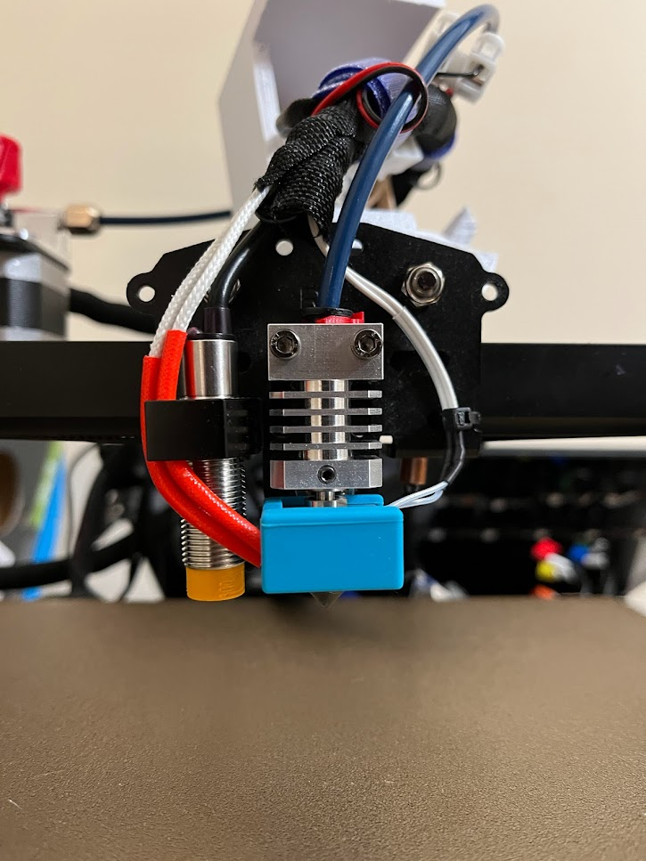
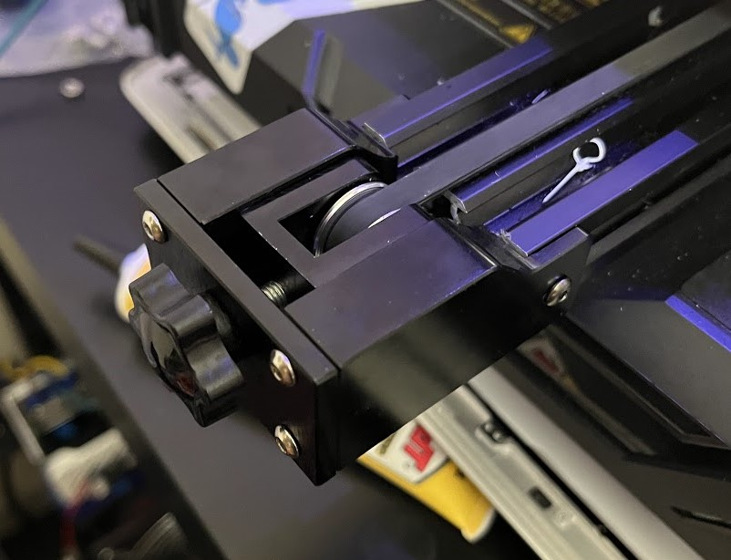

Silicone Spacers¶
These spacers offer a much more consistent leveling process and wont warp the bed! The only catch is this mod needs one printed spacer to offset the creality cut-out.
Capricorn Bowden Tube¶
This is apparently a standard upgrade for the low end printer market. I personally have found this to make little to no difference, and recommend spending the money elsewhere.
Hotends¶
MicroSwiss Hotend¶
After owning this for about a year now I can say this: get a different hotend!
This product has been quite problematic for me as of recent.  The beginning was great, everything worked well and was built well. However when it came to nozzle changes things got bad. This hotend uses a single set-screw to keep the heat block/throat attached to the heat-sink. Well, when one needs to change a nozzle they need to rotate the nozzle whilst holding the heat block to remove it. The single set screw is insufficient to properly hold it and will come loose every time. I’ve even had it some loose after ~30hrs of print time, leading to many a clog!
E3D Revo Nozzle¶
A worthy successor?
I will likely be upgrading to one of Revo3D’s ‘quick change’ hotends. I’ve found that I like to use a variety of diameters for my prints, easy
nozzle changes would be awesome compared to what I’m currently dealing with. When this upgrade is purchased I’ll write a more complete review here.
Pulleys/Frame¶
Steel Pulley Set¶
Y-Axis ¶
After some time I noticed that my y-axis began to squeak and have some irregular movement. When I took the stock end apart I saw that while there was a metal axle and bearing, the rest of the assembly was plastic! While not bad in theory, for my use case and faster speeds this simply would not do. Not only that, but over time the metal axle will eat into its plastic housing and cause the printer to become unaligned. I then looked into finding an all-metal y-axis and found this one! The y-axis fits stock, even using the stock bolt holes in the frame!
X-Axis¶
The pulley that comes in that kit is semi-compatible with the printer, but it will have to be at maximum extension and secured with only one bolt. If one wished they could drill and tap a new hole into the x-axis. I’ve found that the single bolt is sufficient.